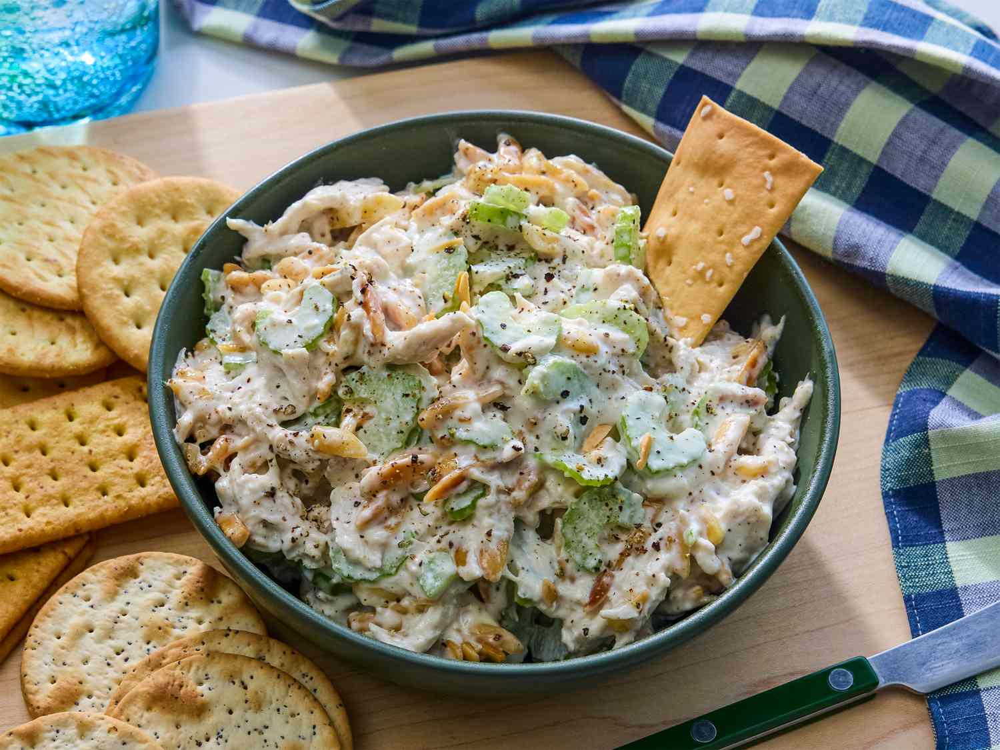

Chicken Salad

This creamy chicken salad recipe is the best and a family favorite! I like to use leftover roast chicken or baked chicken breasts that have been sprinkled with basil or rosemary. Almonds and celery add a lovely crunch.
Ingredients
- ½ cup blanched slivered almonds
- ½ cup mayonnaise
- 1 tablespoon lemon juice
- ¼ teaspoon ground black pepper
- 2 cups chopped, cooked chicken meat
- 1 rib celery, chopped
Directions
- Gather all ingredients.
- Place almonds in a frying pan. Toast over medium-high heat, shaking frequently. Watch carefully, as they burn easily.
- Mix together mayonnaise, lemon juice, and pepper in a medium bowl.
- Toss with chicken, toasted almonds, and celery.
- Enjoy!